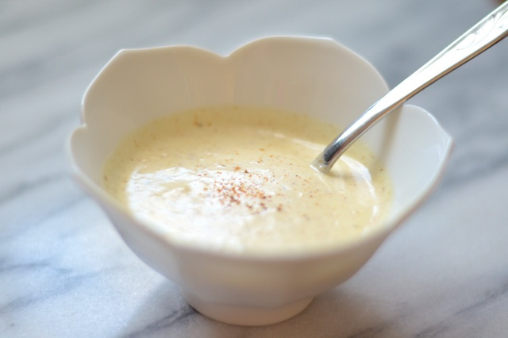

Mayonesa Casera
| Ingredientes | Cantidades |
|---|---|
| Aceite | 200 ml. |
| Huevo | 1 |
| Jugo de limon | 1 cucharada |
| Sal | 1 pizca |
- Poner el huevo, el jugo de limón y la sal en un recipiente.
- Comenzar a echar el aceite en forma de hilo y comenzar a batir. Prestar total atención porque si se pasa se corta!
- Batir hasta que emulsione y se forme una mezcla cremosa.
- Una vez que haya emulsionado, mezclar para incorporar todo. Probar y rectificar los sabores.
- Listo! Se puede agregar un poco más de limón si se quiere lograr un sabor a limón más marcado.
Tip del chef: La mayonesa casera dura de 2 a 3 días en la heladera, así que no conviene hacer mucha cantidad así no se desperdicia!